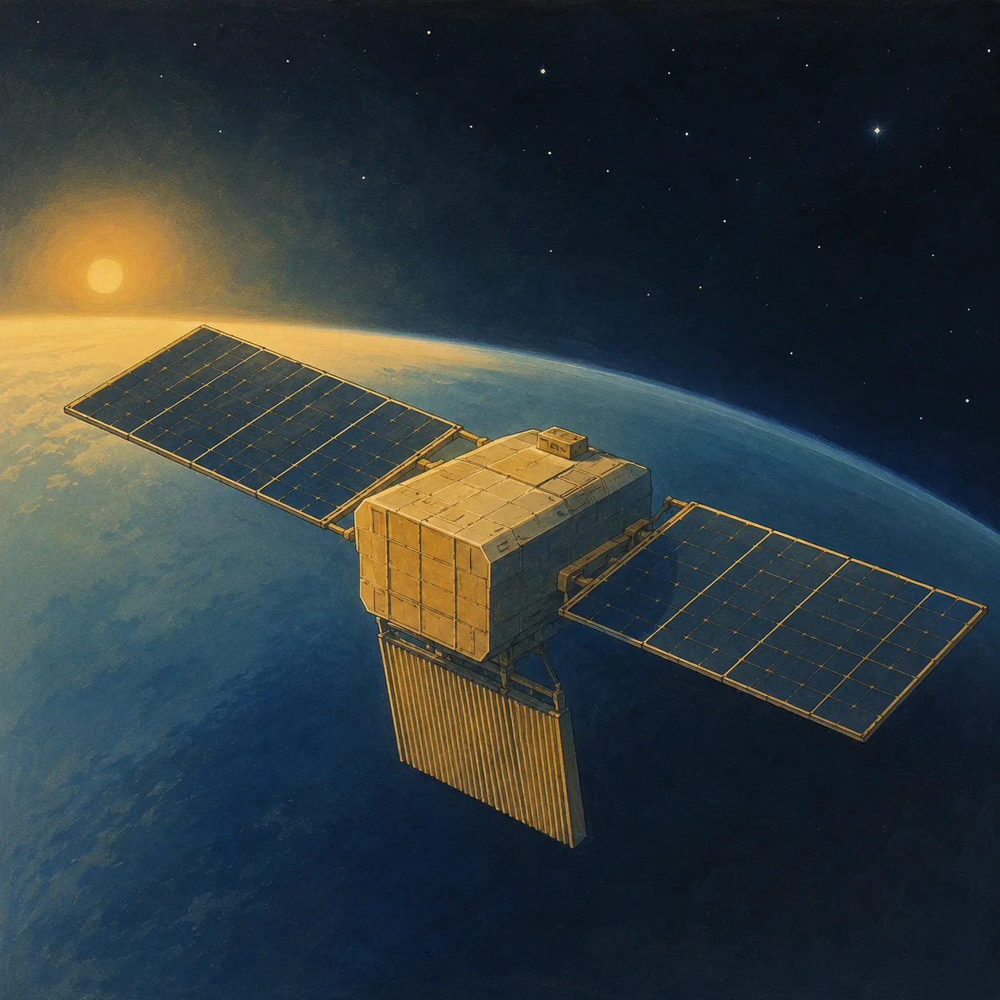
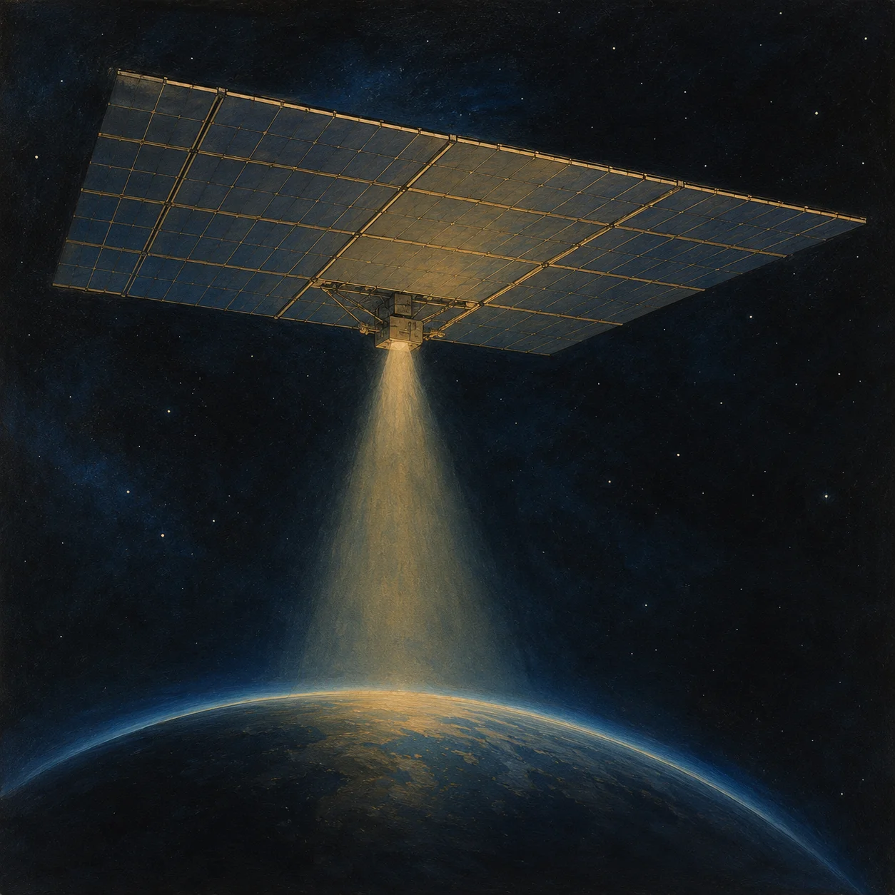
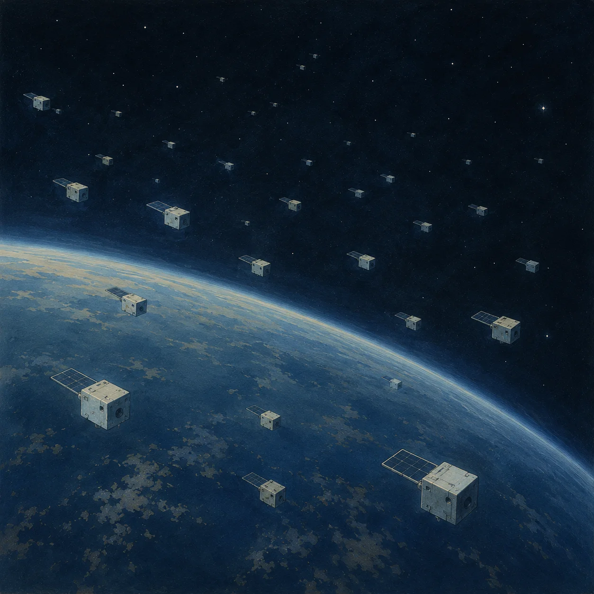
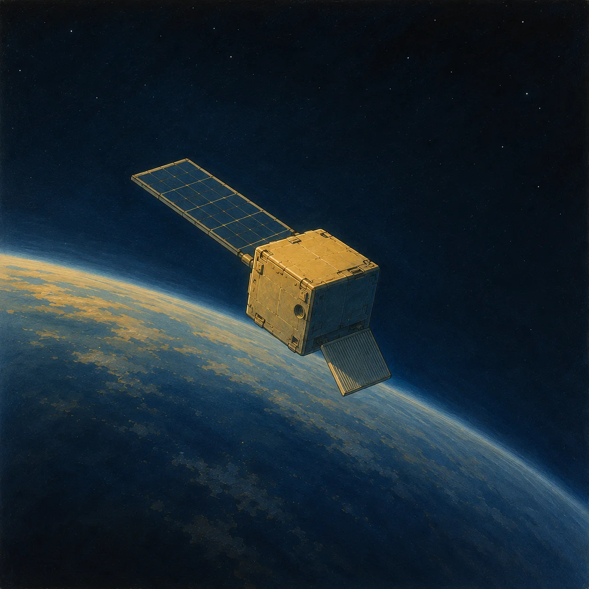
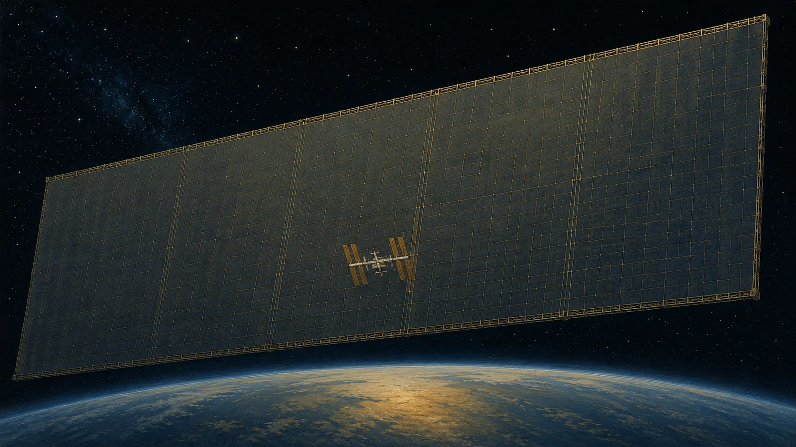
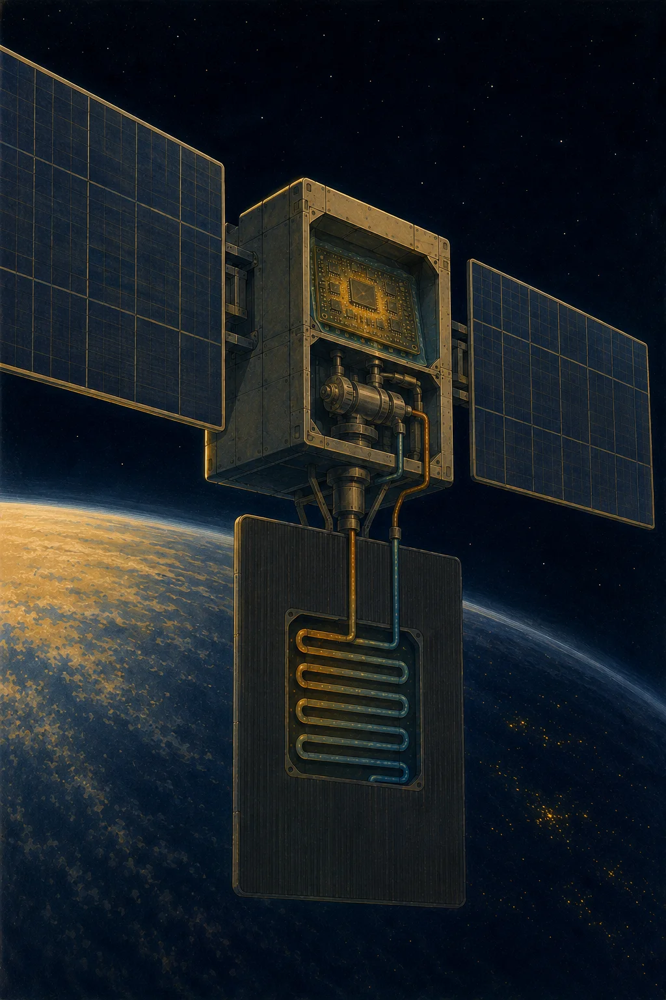
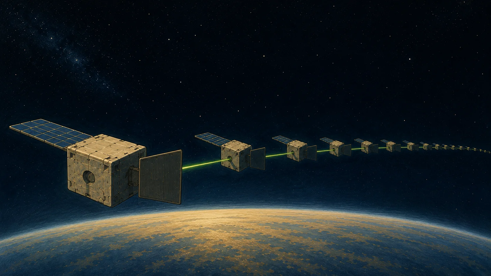
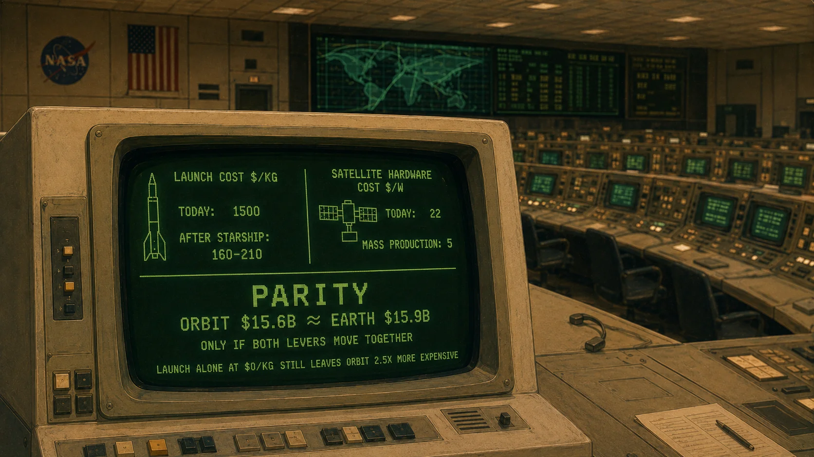

Orbital Computing: Space-Based Data Centers, Math and Money
CosmoPhil for SpaceEdu · July 10, 2026
1. Introduction: Artificial Intelligence Has Outgrown Its Planet
Artificial intelligence has outgrown the planet that gave birth to it. According to a report from the United Nations University Institute for Water, Environment and Health (UNU-INWEH), published in June 2026, global data center energy consumption could double by 2030 to reach 945 TWh a year — comparable to Japan's entire annual electricity use — with AI's share of that number climbing from roughly 20% today to 40%. The same report estimates the associated cooling water draw at 9.3 trillion liters a year — enough to cover the basic household needs of 1.3 billion people across sub-Saharan Africa for an entire year.
The problem isn't that there's too little energy in principle. It's that there isn't enough of it in the right place — and this is no longer some abstraction on the 2030 horizon; it's already hitting businesses today. In spring 2026, the analytics firm SemiAnalysis surveyed more than fifty large enterprises and found that unlimited AI token usage — something companies like Meta were actively encouraging not long ago — had, within a matter of months, turned into hard budget caps. Limits range from $250 a month at one of the largest U.S. aerospace contractors to $2,000 at Stripe and Workday. Uber managed to burn through an entire year's AI coding-tool budget in just four months — and then capped spending at $1,500 per employee. This isn't a sign that demand for compute is collapsing. It's a sign that compute capacity is already, today, a scarce resource that has to be rationed.
We've run into what engineers call the "energy wall": ground-based grids can't keep up with peak demand, permits for new capacity take years, and local residents are increasingly pushing back against new data centers — giant "farms" that eat up acres of land and millions of liters of cooling water. This pushback has a name: NIMBY, Not In My Backyard.
At the end of 2025, one of the hosts of the podcast Hard Fork (The New York Times) half-joked that the next step would be a movement called NOMP — Not On My Planet: people who'd rather ship the whole loud, thirsty digital infrastructure off the planet entirely. The joke turned out to be prophetic. That's exactly where — beyond the atmosphere — Google, SpaceX, and a handful of startups that raised billions of dollars over the past year are now looking.
In this piece, we'll work through how orbital compute infrastructure is actually built, why vacuum physics both helps and hurts servers at the same time, and under what conditions launching GPUs into space becomes economically justified. We'll trace the path from the earliest ideas about space-based power to spring 2026 — the moment the industry quietly moved from arguing over whether this is even possible to signing contracts and filing paperwork for tens of thousands of satellites.
Let me state my position up front, so you know where I'm coming from: I'm not selling a dream, and I don't believe everything promised in a pitch deck is inevitable. But I'm an engineer, and there's one honest question I care about: what here actually works according to physics, and what's just a premium on a stock valuation? That's what I'll try to answer.

2. What Is an Orbital Data Center
In the simplest sense, an orbital data center is server capacity mounted on artificial satellites. But "a server in a box, in orbit" is already yesterday's picture. The modern concept is much closer to a distributed supercomputer scattered across the sky.
Technically, it's a network of nodes in low Earth orbit (LEO). Each node carries powerful processors (NVIDIA H100s or Google TPUs), power from solar panels, and massive radiators to shed heat. But the key piece is the link between them. Instead of copper wiring between racks, optical inter-satellite links (OISL) do the job, with throughput up to 10 Tbit/s. That turns a "swarm" of individual satellites into a single virtual computer hovering over the planet.
If a traditional cloud is physically tied to land, water, and power lines, an orbital cloud leans on two things Earth never has enough of: uninterrupted solar power and empty space with no unhappy neighbors. At its core, this isn't a new kind of computer — it's an attempt to move a computer somewhere with more room, a more reliable power outlet, and calmer nerves all around.
3. Why Now: A Perfect Storm
The idea of "servers in space" is old, but it's only been taken seriously since 2024–2026. Four factors lined up at once, and none of them alone would have been enough.
AI's energy hunger. Training modern models is measured in gigawatt-hours. On Earth, getting permission for that kind of capacity means years of hearings and lawsuits with local communities.
Water and land scarcity. Ground-based data centers drink millions of liters of water for evaporative cooling. In dry regions, that's already sparking protests — the same NIMBY dynamic.
The launch-cost revolution. The price of putting a kilogram into orbit has dropped from roughly $10,000 in the shuttle era to about $1,500 on a Falcon 9. Starship's success promises to push that down to $200 by the mid-2030s. Without this factor, the whole conversation would be pure fantasy — cheap launch is what moves the idea out of dreamland and into a spreadsheet.
Data that's already in space. Earth-observation satellites (SAR radar) generate up to 10 GB of data per second. Sending that stream to Earth for processing is expensive and slow. It's cheaper to process it right there in orbit and send down a finished answer instead of raw material. This isn't a hypothetical anymore — it's existing demand: the market for this kind of processing already exists today; it just needs a cheap point of compute on-site.
Put it all together, and space becomes the one place where AI can scale without years of permitting battles or draining rivers for cooling.
4. A Brief History of the Idea: From Missile Defense to the Cloud
Orbital computing has two lineages — energy and military — and both are older than they look.
The energy lineage doesn't start with data centers; it starts with power plants. In 1968, American engineer Peter Glaser was the first to formulate a rigorous engineering concept for a space-based solar power station (SBSP): put vast fields of solar panels into geostationary orbit and beam the generated power — on the order of 5–10 GW — down to Earth as a focused microwave beam. It was Glaser, not science fiction, who laid the technical groundwork for the whole idea of "energy from beyond the atmosphere." Mid-twentieth-century popular science literature carried the image of orbital industry for decades, but the patent and the math belong to him.
The second lineage is military, and it's the one closer to computing. In the 1980s, under the Strategic Defense Initiative (SDI), came the Brilliant Pebbles project. The idea: instead of one bulky, centralized system, a swarm of thousands of small, autonomous interceptor satellites, each detecting, classifying, and tracking its own target. The real innovation wasn't the weapon — it was the idea of processing data right there in orbit instead of shuttling it to Earth and back, because there are no spare seconds when you're intercepting a missile. This was the first seed of space-based edge computing, half a century before the term became fashionable.
In 2019, the U.S. Space Development Agency (SDA) revived that decentralized logic in the PWSA architecture — a layered network of satellites processing "sensor-to-shooter" data right in space. The same architecture underpins today's Golden Dome program.
The history comes full circle nicely. Modern startups like Starcloud are solving the exact same problem military engineers set out to solve half a century ago: getting around the "bottleneck" of ground-based communication links by processing data where it's generated. The targets changed — from intercepting missiles to training language models. The principle didn't.



All images: artist's concept, not photographs.
5. How It Works: The Physics of an Orbital Data Center
This is where the engineering starts — and it's exactly what separates a real project from a pretty rendering. Let's go system by system.
5.1 Power: A Sun That Almost Never Sets
Space's main advantage is light. Without an atmosphere, solar radiation is 36% more intense than at Earth's surface: a panel catches an unfiltered flux of about 1,361 W/m², with no clouds, dust, or dusk to speak of.
Generated power is described simply:
where \(I\) is solar irradiance and \(A\) is panel area. But intensity is only a third of the story. The bigger win is elsewhere: on the right orbit, a panel is lit almost the entire time. On Earth, the average capacity factor for a solar plant in the U.S. is about 24% (night, clouds, angle). In space, on a sun-synchronous orbit, it's over 95%.
Multiply the two factors together — the intensity gain (×1.36) and the uptime gain (95% versus 24%, or nearly ×4) — and you get the number Google likes to cite: one square meter of panel in space produces roughly 8 times more kilowatt-hours than the same panel on Earth. The rest of the way to that figure comes from the absence of seasonality, dust, and the morning "warm-up" every terrestrial system goes through. Space isn't a brighter bulb. Space is a bulb that's almost never switched off.
5.2 Cooling: The Only Way to Get Rid of Heat in a Vacuum
This is where physics turns against us. On Earth, servers are cooled by air or water. In a vacuum, there's neither: convection doesn't exist, and the only way to shed heat is to radiate it away as infrared light.
Radiative efficiency is described by the Stefan–Boltzmann law:
where \(\sigma\) is the Stefan-Boltzmann constant, \(\varepsilon\) is the surface's emissivity, \(A\) is the radiator area, and \(T\) is its temperature. The key term here is the fourth power of temperature. It works both for us and against us: to shed a lot of heat, a radiator has to be either very hot or very large.
How large? For a 1 GW data center at a "room temperature" radiator (300 K), you need 2.18 to 2.56 km² of radiating surface — dozens of football fields, floating in space. You can save some area by running the radiator hotter, at 350 K: the area drops nearly in half, to ~1.18 km². But hotter hardware degrades faster — the first of many engineering trade-offs where physics forces a choice between "efficient" and "durable."
It's worth pausing here to note that this isn't the only calculation of its kind, and four independent sources now converge on almost the same point. JPL physicist Slava Turyshev, in a separate academic paper (May 2026), derived the same radiator area from first principles for a 1 MW node and, extrapolating to 1 GW, arrived at 2.5 km² — squarely inside our range. Space commentator Scott Manley, in a separate breakdown (June 2026), took a far more modest scale — 20 kW, the typical load of a single Starlink V3 satellite — and, using the same Stefan-Boltzmann law, found that an 80°C radiator would need about 23 m² across both sides of the bus, which almost fits within the satellite's own body without any extra deployable panels. Different scale, same law, same arithmetic. When independent calculations, done by different people using different methods at wildly different power scales, converge within a few percent rather than a factor of several — that's exactly what separates engineering from a nice slide deck.
This, on top of everything, is a theoretical minimum. Engineer Andrew McCalip, who built a public model of an orbital data center, considers it more honest to account for the fact that a panel in space is heated not only by its own hardware but by reflected sunlight and infrared radiation from Earth itself. His calculation for 1 GW on a terminator orbit gives a radiator of about 4 km² at an equilibrium temperature of 63°C — right up against silicon's 85°C limit. Real physics always demands more area than the ideal case.
Curiously, real hardware unexpectedly flips this logic — in a good way. SpaceX's official specs for the AI1 satellite list a radiator of only 110 m² for a 120–150 kW compute load. Extrapolated to 1 GW, that comes out to a laughably small 0.7–0.9 km² compared to the previous paragraph — several times smaller than either the ideal calculation or McCalip's honest one. The answer isn't a violation of physics; it's architecture. The AI1 radiator is a separate part, not merged with the solar panel, and it radiates from both sides. It doesn't have to shed the absorbed solar flux the way a bifacial panel does in McCalip's model — only heat from its own chips. Splitting "catch the sun" and "shed the heat" across two different surfaces turned out to be more efficient than combining them into one — a small but genuine engineering lesson real hardware taught the theoretical model. We don't even have to guess what that comes out to in watts per square meter: Musk himself gave the figure directly in June 2026 — 1,400 W/m², double-sided, oriented edge-on to the Sun.
And here's a problem physics created that engineering hasn't solved yet. A radiator the size of a dozen football fields is beautiful on paper, but no one has ever deployed a single rigid structure of that scale in space. The largest thing humanity has ever assembled in orbit is the ISS, built piece by piece over more than a decade — and it's only the size of a single football field including all its trusses and panels. There's no way to launch a single rigid radiator spanning square kilometers on one rocket — and, worse, no way to keep it in one piece once it's up there. A massive flexible structure in space flexes at the slightest disturbance — maneuvers, pump operation, heat cycling — and there's almost nothing in a vacuum to damp those oscillations. Left to accumulate, cyclic loads break thin trusses through fatigue failure: the same way a paperclip bent back and forth breaks not from force, but from repetition (more on this in section 5.8).

So the industry took a detour. Since you can't build one giant node, you build many small ones. Instead of a single colossus with a sky-filling radiator, you deploy a swarm of dozens or hundreds of modest satellites, each with its own compact radiator, stitched together by lasers into one computer. That's exactly how Google's 81-satellite swarm works, and how SpaceX's and Cowboy's thousand-satellite constellations are built. A dramatic rendering of an orbital data center with a radiator spanning the whole sky is an illustration of a principle, not an engineering blueprint. Reality is more modest, and smarter: not one colossus, but a swarm.
5.3 Cooling Inside the Node: Why Not Boiling
Radiators handle heat on the outside, but first it has to be collected from the chips and carried there. This is where immersion cooling comes in: boards are fully submerged in a dielectric fluid. But there's a question any careful reader will ask right away: why not boiling, if a boiling dielectric gives the best heat transfer on Earth?
The reason is that boiling on Earth relies on buoyancy: a vapor bubble is lighter than the surrounding liquid, so it rises and detaches from the hot surface, clearing the way for fresh, cool liquid. In zero gravity, there's simply no buoyancy — and NASA experiments on the ISS show what happens without it: the bubble doesn't detach. Instead, it grows and merges with its neighbors into a stationary vapor film right on the chip's surface, insulating it from the liquid and driving the temperature sharply upward. In other words, open boiling in microgravity doesn't work better — it works noticeably worse than on Earth, and without forced circulation it can cause overheating instead of cooling.

So the realistic architecture is a simple single-pump loop with no boiling: liquid is actively pumped past the submerged boards, picking up heat through ordinary heat transfer (warming, not boiling), and carries it to the radiator, where it cools and returns. The pump is literally doing the job gravity does for free on Earth. This is the same logic real orbital hardware already uses: the ISS pumps ammonia, Russian modules use glycol — an ordinary liquid loop, no phase change involved.
5.4 Radiation: Why AI Chips Survive Where Ordinary Electronics Die
Cosmic radiation causes "bit flips" — Single Event Upsets, random memory errors. You'd expect a commercial GPU in a vacuum to turn into a brick fast. But Google's tests showed the opposite: Trillium TPU chips under a 67 MeV proton beam survived a dose equivalent to five years at the target orbit (about 750 rad) without permanent failure. The first memory errors only began around 2,000 rad — nearly three times the projected five-year dose.
But the more interesting part isn't the hardware's toughness — it's a property of the AI itself. A neural network with billions of parameters is naturally resistant to rare noise: a single bit flip drowns in the statistics of training, like a typo in a thick book. What would kill a precise banking calculation is just background noise to a model. Space turns out to be unexpectedly friendly to exactly this class of computing.
5.5 Communication: Lasers Instead of Wires
Inside the swarm, satellites talk to each other over optical (laser) terminals. NASA has hit 200 Gbit/s in experiments; Google has pushed lab lasers to 1.6 Tbit/s. Optics gives you fiber-optic speed without the fiber — and that's exactly what stitches a scattered collection of satellites into a single computer.
5.6 Orbit: Life on the Terminator Line
The ideal spot for an orbital data center is a sun-synchronous "dawn-dusk" orbit at an altitude of 600–800 km. It's a special case: the orbital plane stays perpendicular to the direction of the Sun, so the satellite always flies along the terminator — the line between day and night — crossing the equator at exactly 6 a.m. and 6 p.m. local time. To hold that geometry year-round, the orbit slowly precesses — by roughly one degree a day, exactly keeping pace with Earth's motion around the Sun.
For the satellite itself, this means the Sun always hangs off to the side, just above the horizon, lighting the craft continuously — 95–98% of the time. There's no such thing as a full 100%: around the solstices, in June and December, the tilt of Earth's axis briefly tucks the satellite into shadow for a few minutes each orbit. A slight skew to the orbit fixes most of this, but you still need to carry a small battery reserve. So the honest phrasing isn't "endless sun, 24/7" — it's "sun, almost all the time." A couple of percentage points sounds like nitpicking, but that's exactly where a mission's real power budget gets built.
But the real gift of this orbit isn't energy — it's thermal stability. On an ordinary orbit, a satellite dives into shadow and pops back into light every ninety minutes or so, cooling to −100°C and heating to +100°C; materials are constantly contracting and expanding, and onboard systems bounce between heating and cooling. On a terminator orbit, there are no such thermal shocks: external conditions barely change. That lets you split the craft into two zones once and for all — a permanently warm sunlit side and a permanently cold shadow side. The shadow side, which never sees the Sun, becomes a standing radiator, continuously dumping the electronics' heat into space. Thanks to that stability, you can get away with passive thermal control — shields, coatings, radiating panels — instead of heavy, power-hungry active systems. An orbit that cools its own data center: a rare case where geometry works for the engineer instead of against him.
5.7 Latency: Closer Than Alaska
Signal delay is pure geometry:
where \(d\) is distance and \(c\) is the speed of light. To a satellite at 400–600 km, a signal takes roughly 1–10 ms one way. The full "request → orbit → processing → response" cycle (round-trip time) comes out to about 20–40 ms — Starlink-level, and good enough even for real-time applications.
That said, not every estimate agrees so neatly. Professor Yonggang Wen (Nanyang Technological University), in an interview for Aerospace America, cites a very different figure for LEO — around 800 ms round-trip — and adds that this is "more than sufficient for most modern AI workloads." The gap is almost two orders of magnitude, and it isn't an error on either side — it's a difference in assumptions. The pure speed-of-light number we calculated above gives single-digit milliseconds. The 800 ms figure appears to already fold in real network routing: queuing for a ground gateway, protocol overhead, waiting for a channel to free up (that "Γmax ceiling" from Turyshev's model, which comes up again in section 6). Both numbers are real — one just answers "how long does the signal take to travel," and the other answers "how long will a request actually wait in a congested network."
Starcloud CEO Philip Johnston puts it this way: from a latency standpoint, a data center at 400 km isn't all that different from one in Alaska or Seattle. A signal to low orbit travels a shorter distance than it does through fiber between many pairs of Earth cities. But it's important not to confuse two different things here. Latency is travel time, and it's fine. The bottleneck is elsewhere — how much data per second you can actually push down the link from orbit to Earth. The best space-to-ground laser systems today manage about 200 Gbit/s — an order of magnitude below what terrestrial fiber can carry in terabits. It's like comparing a courier's speed to a semi-truck's cargo capacity: how fast it arrives isn't the question — how much it can carry in one trip is. A signal to orbit and back travels fast; downloading a genuinely large volume of data from up there is the bottleneck.
5.8 Engineering Limits: Resonance, Drift, and a Swarm Instead of a Station
The bigger the structure, the trickier the physics gets. A radiator spanning square kilometers at 800 km altitude feels residual atmospheric drag — slow but relentless drift. And mechanical cooling pumps generate vibrations that are barely damped at all in a vacuum: there's no air to absorb the oscillation. In the worst case, vibration hits resonance and tears apart thin trusses — the same fatigue loading that makes it impossible to build a single giant rigid structure in the first place (for now).
It was exactly this resonance problem that led Google, in Project Suncatcher, to abandon the idea of one giant station in favor of a swarm of 81 satellites flying in tight formation 100–200 meters apart. That solves the resonance problem but creates a new one: keeping dozens of craft in formation to within meters requires constant AI-driven control. A space computer that's needed, among other things, to keep itself from falling apart.

6. Where This Is Actually Needed
Orbital data centers won't replace the world's servers — and they're not trying to. But there are niches where they're not a luxury, but the only sensible option.
Earth-observation data processing. Instead of transmitting terabytes of raw SAR radar imagery, onboard AI produces a finished answer straight away: "there's a wildfire here," "the harvest will run X tons." What comes down is the answer, not the raw material.
Batch AI training and inference. Workloads that don't need an instant response to a user fit orbital capacity perfectly. Starcloud has already trained a language model right in space (more on this below).
Space-native edge computing. Future Moon bases and Mars missions can't wait minutes for a signal from Earth — they need a computer next door.
Digital sovereignty. The European ASCEND project and Chinese programs both look at orbit as a way to shield data from terrestrial wars, blockades, and cyberattacks — infrastructure that's physically hard to reach.
These four points share a common denominator, and JPL physicist Slava Turyshev formalized it well: applications don't split by industry, but by where orbit's value actually comes from. He identifies three classes (in his terminology, C1, C2, C3). Earth-observation processing and edge computing are a class where computation cuts the volume of data that has to come down to Earth at all — the value is in what happens on orbit, not in what gets downloaded. Building compute into existing communications networks (like Starlink) is a class where an orbital data center saves on infrastructure that's already flying up there anyway. And "ordinary" compute for terrestrial users — training models, running inference on request from Earth — is the hardest case, the third class: here, orbit gets no discount on data volume or shared infrastructure, and has to compete with ground-based data centers head-on. It's precisely this third class where the entire economic argument you'll find in section 11 plays out.
7. Advantages: An Honest Comparison
| Parameter | Terrestrial Data Center | Orbital Data Center |
|---|---|---|
| Power | Grid-dependent, often fossil fuel | Sun >95% of the time (dawn-dusk orbit) |
| Cooling | Enormous water and electricity draw | Passive radiation into vacuum |
| Land use | Acres of expensive land, resident conflicts | Free orbital space (for now) |
| Regulation | Years for permits, strict environmental rules | Relative legal vacuum (for now) |
| Latency | 5–100 ms (RTT) | 1–10 ms one way / ~20–40 ms RTT |
| Maintenance | Components replaced over decades | Repair currently impossible, nodes are disposable |
Take a look at the last row — it's often glossed over. In space, you gain on power and water, but you pay for it with the inability to fix anything. More on that in the next section.
8. Challenges and Risks: Where the Skepticism Is Justified
The more serious the industry gets, the more serious the objections become. That's a healthy sign: nobody bothers to criticize nonsense this specifically. Let's split the risks into "old" (engineering and economic) and "new" (which only surfaced in 2026, once the idea moved from concept to scale).
Old, Well-Understood Risks
Launch cost. For space to match Earth on the cost of compute, you need to launch a kilogram for around $200. Today it's 7 to 10 times more expensive. All of the industry's optimism rests on one assumption: that Starship really does drive that number down.
Repair is impossible. A burned-out GPU in space can't be swapped out in flight today — a broken node simply gets shut down and written off. But for a swarm, that isn't fatal, because you're not repairing a single satellite — you're maintaining the constellation as a whole: a faulty node gets retired, and a replacement arrives on the next launch, without touching its neighbors. In that sense, a swarm doesn't behave like a single organism with a fixed lifespan — it behaves more like a jellyfish or a coral reef: individual cells die off and get replaced continuously, while the colony itself goes on existing indefinitely — as long as someone keeps feeding it new launches. That "immortality" has a price, but it isn't necessarily worse than Earth's: like a terrestrial data center, a swarm demands constant investment — just not in repairs, but in new launches. Which one ends up cheaper depends on which falls faster: the cost of launch and satellite hardware, or the cost of terrestrial energy and maintenance. That's not an engineering question — it's an economic one, and I'll work through the numbers in section 11.
Kessler syndrome. The filings from SpaceX (1 million), Blue Origin (51,600), Cowboy (20,000), Orbital (100,000+), and Chinese projects together create a genuine risk of cascading collisions — a chain reaction of debris that could shut off access to orbit for centuries. This isn't an alarmist scenario; it's calculated orbital dynamics, and the numbers are already concrete: Starlink carried out around 300,000 collision-avoidance maneuvers in 2025, and by some estimates, full deployment of all the constellations currently on file would require on the order of half a billion maneuvers a year. A full breakdown of Kessler syndrome is a topic for a separate article; here I'm flagging it as one risk among several, not as its own deep dive.
Launch ecology. Aluminum structures that burn up on deorbit seed the stratosphere with ozone-destroying nanoparticles. And soot from rockets at high altitude, according to the journal Earth's Future, traps heat 500 times more effectively (per unit of mass) than soot at the surface — because up in the stratosphere, rain never washes it out. Models that call orbital computing "carbon-neutral" usually leave this factor out entirely.
New Risks in 2026: Objections That Grew Up Alongside the Industry
While engineers were still arguing about soot, orbital data centers picked up critics from entirely different fields.
Astronomers are sounding the alarm. Professor Tony Tyson (UC Davis) warns that data-center satellites, with their giant panels and radiators, will be brighter than today's Starlink satellites, which already interfere with telescopes. At full deployment of a million craft, the sky's combined brightness could rival a glint from half a full Moon — with individual flares as bright as Venus. For ground-based optical astronomy, that would spell the end of many research programs: you simply can't hunt for supernovae in a sky streaked with bright trails.
The "privatization of the sky" and the Global South. Low Earth orbit is a shared resource of humanity — that's what the 1967 Outer Space Treaty says — but it's being filled by the decisions of a narrow circle of Western and Chinese corporations. Analysts at The Space Review warn that the more densely the Global North occupies LEO, the more expensive and dangerous it becomes for developing countries to launch their own satellites — for something as basic as agricultural monitoring. And history shows that access to private space infrastructure can be switched off for political reasons.
Space weather as a risk multiplier. A paradoxical risk: orbital data centers are supposed to take load off terrestrial networks, but while most AI capacity is still on Earth, those networks are becoming more fragile. A strong solar storm can induce currents in power lines and knock out high-voltage transformers that take months to replace. For data centers that need continuity, even a brief outage in the middle of training a model means losing an enormous amount of work. There's a flip side worth noting too: solar activity hits orbital craft directly as well — from onboard system failures to solar wind that destabilizes an entire constellation.
Maybe we just don't need it? The most uncomfortable objection isn't technical — it's logical. Kathleen Curlee (Georgetown, Center for Security and Emerging Technology) puts it bluntly: it would be greener and cheaper to just make terrestrial data centers cleaner than to haul the same task into space at triple the budget. Even NVIDIA — a company with something to gain either way — officially takes a measured position: orbital data centers, in its view, are more likely to complement terrestrial infrastructure than to replace it. That's exactly the conclusion this article arrived at on its own.
9. From Argument to Construction: Spring 2026
The idea of orbital data centers had been discussed for years, always in the subjunctive mood — "if launch gets cheaper," "if cooling gets solved," "if there's demand." In spring 2026, the subjunctive quietly disappeared. While academic journals were still arguing about stratospheric soot and telescope interference, the industry stopped arguing and started buying hardware.
One event marked the turning point. On May 6, orbital computing got its first external customer: Anthropic — the company behind the AI model Claude — struck a deal with SpaceX not just to lease ground-based capacity, but to jointly develop several gigawatts of compute in orbit. Up to that point, SpaceX had essentially been building space servers for itself. Now someone outside Musk's empire had agreed to pay for them — and that changes everything. By summer, the numbers stopped being guesswork: Anthropic pays roughly $1.25 billion a month for access to SpaceX's compute, and Google pays roughly $920 million a month. A technology built "for internal use" is easy to shut down. A technology someone is paying a billion dollars a month for is already too embarrassing to cancel.
What followed came fast enough that the pace itself was diagnostic. Five days later, on May 11, the startup Cowboy Space — formerly Aetherflux, which started out in space-based solar power — raised $275 million at a $2 billion valuation, and three days after that had already filed with the FCC for a 20,000-satellite constellation called "Stampede." Their idea is the most radical of the bunch: don't launch a data center as a separate payload — turn the rocket's upper stage itself into a compute node, with the hull doubling as a radiator, staying to work wherever it ends up. By the end of May, Starcloud — already flight-proven — had ordered fifty laser terminals from SpaceX, a solid sign the company had moved from slide decks to actual assembly.
By June, the race had picked up players building platforms rather than data centers themselves: Muon Space unveiled a "Starship-class" satellite platform designed specifically for orbital compute — already, tellingly, with orders from real customers. A new startup, Orbital, raised its first funding for a 100,000-satellite constellation. And right before its own IPO, SpaceX revealed the scale of its own ambitions: AI1 satellites with a seventy-meter solar-panel wingspan, the Gigasat factory in Bastrop, Texas, and a million-satellite constellation with an official name — Starmind.
A first external customer. More than $450 million in fresh investment at just two companies. Regulatory filings for tens of thousands of satellites and concrete hardware orders. Whether all of this pays off is worth arguing about — and it should be argued about. But the question of whether it's possible at all quietly closed itself in spring 2026. While some were still proving orbital data centers impossible, others simply started building them.
10. The Players: Who's Building the Orbital Cloud
| Company | What It's Doing | Scale / Timeline |
|---|---|---|
| Starcloud | The flagship. Launched Starcloud-1 (60 kg, H100) on November 2, 2025 | 5 GW by 2035; FCC filing for 88,000 satellites; Starcloud-2 (2027), -3 on Starship (2028) |
| Google (Suncatcher) | Betting on its own TPUs and an 81-satellite swarm | Demo mission in 2027 |
| SpaceX (Starmind) | Integrated with Starlink V3; AI1 satellites: 70 m wingspan / 150 kW; Gigasat factory, Bastrop, Texas | Up to 1 million craft; first AI1 units in 2027 |
| Blue Origin | "Project Sunrise" — a competing data-center constellation; separate TeraWave comms network | 51,600 satellites (FCC filing, March 2026) |
| Cowboy Space | "The rocket is the data center," Stampede constellation | 20,000 satellites; 1 MW node by 2028 |
| Muon Space | Condor-Ultra, a "Starship-class" platform | Launch in 2028, has customers |
| Axiom Space | ISS-mounted data center prototype (AxDCU-1), fall 2025 | Commercial Orbital Data Center T1 |
| Orbital | Production nodes built on NVIDIA Vera Rubin | 100,000+ satellites, demo in 2027 |
| ADA Space (China) | "Three-Body Computing Constellation" with Zhejiang Lab; first 12 satellites already flying | 2,800 satellites; first launch in May 2025 |
| EU (ASCEND) | Feasibility study confirmed profitability with "clean" rockets | 2050 horizon |
Starcloud deserves its own callout, because it's no longer on paper. In November 2025, its 60-kilogram Starcloud-1, carrying an H100 GPU, didn't just survive the vacuum — it did something no one had done before: trained a language model right in orbit (as a demo, in Shakespearean English) and ran inference on Google's Gemini in space. That's the actual line between "possible" and "done."
And separately — China, because here, unlike the Western filings-on-paper, satellites are already flying for real. The startup ADA Space, together with Zhejiang Lab, launched the first 12 satellites of its "Three-Body Computing Constellation" on May 14, 2025 — nearly a year before all the spring 2026 events chronicled above — with an eventual target of 2,800 AI-equipped satellites. Where the U.S. mostly has FCC filings and renderings for now, China already has working hardware in orbit. The Reds, it seems, are once again doing things their own way.
11. The Economics: An Honest Count
Building a 1 GW orbital data center today costs, by aerospace engineer Andrew McCalip's calculation (Varda, February 2026), about $51 billion — against roughly $16 billion for a terrestrial equivalent of the same capacity over the same five-year span. A threefold gap. Here's where it comes from:
That $51 billion covers a network of roughly 4,300 satellites, launching about 30 million kg of mass into orbit, and five years of operation — after which the whole thing gets written off and replaced with a new constellation. A terrestrial data center, for the same money, runs for decades and gets repaired piecemeal. Today, space isn't a way to save money — it's a way to get around the shortage of energy and land, at the cost of tripling your budget.
The Calculator That Ends the Argument
McCalip did something almost no one else in this debate has done: he actually ran the numbers. He built a public model that boils the entire argument down to one figure — the cost per watt of usable power, in orbit versus on the ground — and published it with open sliders. You can turn the dials yourself: launch cost, service life, specific power, hardware cost. His own conclusion is disarmingly honest: it's not an obvious dumb idea — but it's not a sure thing either.
Here's what his model spits out for a 1 GW data center:
| Scenario | Orbit | Earth | Gap |
|---|---|---|---|
| Today (Falcon 9, ~$1,500/kg), 5 years | $80.5 billion | $16 billion | ×5.1 |
| With Starship (~$160/kg), 5 years | $41 billion | $16 billion | ×2.6 |
| 10-year horizon (nodes get replaced) | $68 billion | $17 billion | ×4.0 |
There are three lessons hiding here. First: cheap launch helps, but not proportionally. Launch cost drops by nearly an order of magnitude — from today's ~$1,500/kg on Falcon 9 to the ~$160/kg promised by Starship — while the final cost of orbit only drops by half, from $80 to $41 billion. It comes down to the structure of the budget: even at today's expensive launch prices, launch isn't the dominant line item, and as it gets cheaper, its share shrinks even further — of that $41 billion, launch itself accounts for only about $5 billion, while the lion's share, over $23 billion, goes to satellite hardware. Cheaper rockets close roughly half the gap with Earth, but not all of it.
The second lesson is harsher: the longer the time horizon, the worse it looks for space. A terrestrial data center lasts decades and gets patched piece by piece; an orbital one is disposable, and over a ten-year span you have to redeploy it from scratch — the gap doesn't shrink, it grows to fourfold. That's the exact opposite of the intuition that says "build it once, then collect free sunlight forever."
The third lesson is in McCalip's own conclusion: at this kind of economics, only a company with everything vertically integrated — from rocket to satellite — with no markup at any handoff, can pull this off. Buy your launch, bus, power system, and deployment separately, and the margin stacked at every interface eats you alive.
Don't believe the numbers? Don't argue — move the sliders yourself: the model is open (andrewmccalip.com/space-datacenters). That's the right way to have this argument — not "space is cool," but "here are the numbers, show me where I'm wrong."
Two Levers, Not One
It's worth chasing the uncomfortable question all the way to the end. What if launch were free? Strip the launch line out of the Starship scenario entirely, and orbit still runs around $36 billion against $16 billion on the ground — more than double. Cheap rockets alone don't solve the problem: the bulk of the budget is satellite hardware ($23.6 billion) and its periodic replacement ($11.6 billion), and those line items don't see the price of launch at all.
So what scenario actually closes the gap? Running McCalip's model with two simultaneous shifts — launch drops to $209/kg (between Falcon 9 and Starship), and satellite hardware cost drops from $22 to $5 per watt — puts orbit at $15.6 billion against $15.9 billion on the ground. Actual parity — orbit even slightly cheaper.
That's the real threshold — not one number, but a pair of conditions that both have to hit at once. Launch needs to fall several times over — from today's ~$1,500/kg on Falcon 9 to whatever level Starship ultimately delivers. And satellite hardware needs to get nearly five times cheaper than today's Starlink-class cost, down to a price comparable to an assembly-line car, not a hand-built aerospace product. Google's optimistic $200/kg threshold, which the industry likes to throw around, appears to be only half the equation; the other half requires industrializing the manufacture of the satellites themselves — something moving slower, and less visibly, than progress on launch price.
Is there any progress on this today? Partly, yes. SpaceX's official specs for the AI1 satellite put its specific power at about 70 W/kg — nearly double the default assumption in McCalip's model (37 W/kg). Running the model with that real figure does bring the cost of orbit down from $51 to $44 billion, and combined with an optimistic Starship launch price, down to $39.5 billion (narrowing the gap with Earth from ×3.2 to ×2.5). That's not a hypothesis — it's a verifiable fact about real hardware. But notice: the full-parity scenario above didn't actually require that kind of progress in specific power at all — it stayed close to the model's default there. Parity, in that case, was delivered entirely by the hardware price dropping from $22 to $5 per watt. The two levers are independent, and we now have real data on one of them but not the other: SpaceX doesn't disclose AI1's cost in dollars per watt. Progress is already visible on specific power; the decisive question — whether the hardware itself gets just as much cheaper — remains open.
And here's where the joke stops being a joke. Moving both levers at once — the price of the rocket and the price of the satellite — is only possible for whoever owns both factories, with no markup at the seam between them. Vertical integration isn't a nice corporate phrase; it's the only known way to control both of the variables the whole outcome depends on. Today, there's essentially one company in the world like that. Guess which one.
So Where's the Actual Crossover Point
By Google's Project Suncatcher model (November 2025), orbit matches Earth once launch hits around $200/kg — below that threshold, space-based compute becomes cheaper, because once deployed, the energy up there is effectively free. But when that threshold arrives is a matter of belief, not calculation, and the forecasts diverge wildly:
- Google — a baseline scenario: parity at $200/kg and roughly 180 Starship launches a year by 2035.
- Musk — aggressive: cheaper than Earth in as little as three years, at $100/kg.
- Starcloud — total cost of ownership (accounting for savings on land, water, taxes, and red tape) could already be 10 times lower than Earth's today.
- McCalip — sober: still three times more expensive for now, but even "mediocre economics" is justified if you're building infrastructure meant to last decades.
The same set of facts produces a spread from "three years away" to "by 2050." That's an honest picture of an immature market: the physics is settled; the economics is still arguing with itself.
A Third Voice Says the Same Thing
Google and McCalip are, respectively, industry and an independent engineer-enthusiast. It's worth checking with a third method, further still from any commercial stake in the outcome. Slava Turyshev, a physicist at NASA's Jet Propulsion Laboratory, arrives in his own academic paper at a conclusion nearly identical to ours: orbital computing for terrestrial users is physically possible, but doesn't economically close under current assumptions, and needs several parameters to shift at once, not just one. Three independent methods, three different authors, one and the same qualitative conclusion — exactly what you want to lean on when physics meets money.
But two honest inconsistencies surface in the details, and they're worth stating plainly rather than glossing over.
Launch cost. Turyshev cites SpaceX's official price sheet: $74 million for 22,000 kg of Falcon 9's maximum payload capacity — that's $3,364 per kilogram. That's notably more than the $1,500/kg we've used throughout this piece as a typical current price. There isn't just one gap here, but two, and it's worth spelling them out honestly. $3,364/kg is the price-sheet rate for a one-off customer buying the whole rocket at full payload capacity — that's the sticker price if you don't know anyone at SpaceX. $1,500/kg is a more realistic price for a customer using rideshare launches or volume discounts, closer to what recurring large customers actually pay — and it's the figure used throughout the rest of this piece. And the $160–210/kg that shows up in optimistic Starship scenarios isn't today's price at all — it's a bet on a future that hasn't happened yet. Three numbers answering three different questions, and it's more useful to hold all three in your head than to collapse them into one convenient one.
Satellite specific power. Turyshev's conservative physics, which explicitly accounts for all the mass no one else bothers to count — radiation shielding, maneuvering propellant, avionics — gives a range of 17–29 W/kg for a complete satellite. SpaceX's official specs for AI1 claim 70 W/kg, 2.4 to 4 times better. That doesn't necessarily mean someone's wrong. Either SpaceX has genuinely beaten the conservative technological assumptions of an academic model — entirely plausible for a company mass-producing satellites rather than building them one at a time — or the official AI1 figure doesn't include some of the "fixed mass" an honest model is obligated to account for. The truth is probably somewhere in the middle — but until SpaceX discloses the full AI1 spec, there's no precise answer, and an honest article has to admit that rather than pick whichever number is convenient.

The IPO Caveat
There's an uncomfortable fact that can't be sidestepped. SpaceX's loudest announcements — the million-satellite Starmind constellation, the Gigasat factory, the AI1 satellites — dropped a few days before its IPO on June 13, 2026, and analysts draw a direct line between the two. The offering priced at $135 a share, raised $75 billion (the largest IPO in history), and by the close of the first day of trading the stock was up 19%, pushing the company's valuation to $2.1–2.3 trillion. Bolting "AI infrastructure" onto the business model clearly worked in the valuation's favor: investors are more eager to buy an "AI infrastructure giant" than a "rocket company." Even Jeff Bezos, himself a proponent of orbital computing, called what's happening an "industrial bubble" in the spirit of the dot-com era. That doesn't mean the technology is fake — the dot-com bubble left a real internet behind it. But telling physics apart from a premium on market cap is an honest observer's job.
12. The Future: To the Moon and Beyond
Beyond orbit lies the Moon. The startup Lonestar already delivered the first 8 TB SSD to lunar orbit in early 2025. The Moon looks like an ideal "cold storage" location: no wars, no cyberattacks, no natural disasters, and stable shadow for natural cooling. In parallel, the project Aetherflux (now part of Cowboy's history) and others are working on beaming solar power from space down to Earth — which would close the energy loop on the whole structure.
And here's the real reason this is worth watching. Orbital data centers aren't about hiding humanity inside a computational cloud. Quite the opposite. This is the first infrastructure we're building in space not to explore space, but because space is simply more convenient. And that's a different class of presence altogether. It's one thing to fly to orbit for a flag and a soil sample. It's another to move industry there because it's cheaper and cleaner. That's exactly how every frontier in history has actually been settled — not by the pathos of pioneers, but by dull economics that, at some point, makes "there" cheaper than "here."
Tsiolkovsky wrote that humanity cannot live in the cradle forever. It's curious that the first step out of it is being taken not by people, but by their machines — clearing the road, in effect. A server in orbit doesn't inspire the way a bootprint on Mars does. But it's exactly these unglamorous building blocks — cheap launch, laser links, a square-kilometer radiator — that add up to the infrastructure without which a bootprint on Mars stays a single flag, not the start of a road.
Conclusion
Orbital data centers today sit roughly where personal computers did in the mid-1970s: expensive, complicated, and serious people rolling their eyes. The difference is that two forces hard to argue with are working in this scenario's favor — the physics of vacuum, and the economics of reusable rockets.
I won't try to predict whether this first wave pays off or collapses along with the "industrial bubble" Bezos is talking about. Immature markets are immature precisely because the physics is already settled while the economics is still arguing with itself. But the direction is visible without guesswork: over two months in spring 2026, this topic went from "is this even possible" to filings for tens of thousands of satellites and a first external paying customer. That doesn't look like hype that deflates in a quarter.
And if you look far enough out, here's what's curious. We're used to thinking of space settlement as a feat of heroism — a flag, a boot print, a heroic first mover. This one, it seems, is starting differently: with the unglamorous realization that a server in orbit is simply more convenient than a server in the desert. The cradle Tsiolkovsky wrote about isn't being left with fanfare — humanity is sending its computations ahead first, to build the infrastructure. Well, every road starts with someone laying the first cable. Even if that cable is a laser beam between two satellites over the night side of Earth.
FAQ
How do you cool servers in a vacuum if there's no air? Heat is collected from the chips by liquid and radiated into space as infrared light through radiators. A 1 GW node needs about 2.5 km² of radiating surface; for giant 5 GW nodes (Starcloud's plan), the whole structure spans 4×4 km.
Won't ordinary GPUs fry from radiation? Google's tests (Trillium chips) showed resilience equivalent to five years of mission life. And rare memory errors aren't critical for a neural network — it's inherently resistant to noise.
How do you fix servers in orbit? Right now, you don't — satellites are disposable, with a roughly 5-year lifespan. Down the line, Axiom Space is counting on robots and modular replacement.
What's the latency like? Around 1–10 ms one way to the satellite, ~20–40 ms for a full round trip — Starlink-level, good enough for real-time use.
How much does launch cost today, and what does it need to be? Around $1,500/kg right now. The break-even threshold, by Google's estimate, is around $200/kg.
Is this a real business, or a pre-IPO bubble? Both, at the same time. Demand is real (Anthropic, the energy shortage), the technology works (Starcloud-1), but part of the valuation is a premium on market cap. Even Bezos calls it an "industrial bubble" — which doesn't rule out working infrastructure surviving once the bubble pops.
What about space debris? The main risk. Hundreds of thousands of satellites, without a new disposal system, could trigger Kessler syndrome and shut down orbit for a long time.
Why is all of this happening right now? Four factors lined up: AI's energy hunger, land and water scarcity, cheap launch (Falcon 9, Starship), and data streams that are simply easier to process in orbit.
Sources
Calculations and academic publications:
- Andrew McCalip. Economics of Orbital vs Terrestrial Data Centers — public model and thermal analysis. https://andrewmccalip.com/space-datacenters · code: https://github.com/andrewmccalip/thoughts
- Google Research. Project Suncatcher — techno-economic case for orbital TPU-based computing (November 2025).
- P. E. Glaser. Power from the Sun: Its Future // Science, 1968 — the first engineering concept for SBSP.
- C. R. Barker, E. A. Marais et al. Radiative Forcing and Ozone Depletion of a Decade of Satellite Megaconstellation Missions // Earth's Future, 14(5): e2025EF007229 (May 14, 2026) — the climate effect of soot from megaconstellation launches (stratospheric black carbon). https://agupubs.onlinelibrary.wiley.com/doi/10.1029/2025EF007229
- S. G. Turyshev (Jet Propulsion Laboratory, Caltech). Orbital Data Centers: Spacecraft Constraints and Economic Viability (May 1, 2026) — an independent academic model, first-principles physics. https://arxiv.org/abs/2604.27197
- Scott Manley. Can We Actually Cool Data Centers In Space? (YouTube, June 2026) — an independent first-principles radiator calculation for a Starlink V3-class satellite (20 kW), Stefan-Boltzmann law. https://youtu.be/FlQYU3m1e80
- UNU-INWEH (United Nations University Institute for Water, Environment and Health). Report on the water, carbon, and land footprint of data centers (June 3, 2026). https://www.eurekalert.org/news-releases/1128642 · overview: https://earth.org/9-3-trillion-liters-of-water-un-report-exposes-unfathomable-footprint-of-data-centers-as-ai-booms/
- SemiAnalysis. TokenBudgeting: Our Conversations with Enterprises on Token Spend (June 2026) — a survey of 50+ enterprises on AI token budgets. https://newsletter.semianalysis.com/p/tokenbudgeting-our-conversations
Industry timeline (Spring 2026):
- SpaceNews — Anthropic weighs using SpaceX's orbital data center satellites (May 6, 2026). https://spacenews.com/anthropic-to-consider-using-spacex-orbital-data-center-satellites/
- SpaceNews — Cowboy Space raises $275 million (May 11, 2026). https://spacenews.com/cowboy-raises-275-million-to-build-rockets-with-orbital-data-center-upper-stages/
- SpaceNews — Cowboy files with the FCC for a 20,000-satellite "Stampede" constellation (May 14, 2026). https://spacenews.com/cowboy-files-plans-for-up-to-20000-orbital-data-centers/
- SpaceNews — Starcloud orders Starlink laser terminals (May 26, 2026). https://spacenews.com/starcloud-orders-starlink-lasers-for-orbital-data-center-network/
- SpaceNews — Muon Space unveils the Condor-Ultra platform (June 3, 2026). https://spacenews.com/muon-space-unveils-starship-class-satellite-platform-for-orbital-data-centers/
- SpaceNews — Orbital raises $5 million (June 9, 2026). https://spacenews.com/orbital-raises-5-million-to-join-orbital-data-center-race/
- Space.com — SpaceX's plan for 1 million AI satellites (June 11, 2026). https://www.space.com/space-exploration/satellites/elon-musk-wants-to-put-1-million-ai-satellites-in-space-heres-how-spacex-could-do-it
- SpaceNews — astronomers warn about the threat orbital data centers pose to observations (June 12, 2026). https://spacenews.com/astronomers-fear-orbital-data-centers-will-interfere-with-observations/
- The Space Review — orbital AI and the Global South's exclusion problem (June 15, 2026). https://www.thespacereview.com/article/5242/1
- Tom's Hardware — the Gigasat factory in Bastrop, AI1 specifications (June 2026). https://www.tomshardware.com/tech-industry/big-tech/spacex-unveils-11-million-square-foot-gigasat-factory-a-new-manufacturing-facility-for-space-based-data-centers-aims-for-1-gw-year-of-space-ai-compute-by-late-2027-from-its-satellites
- Elon Musk, Ian Dahl (SpaceX). Interview: Elon Musk on SpaceX Plans (X/YouTube, June 8–9, 2026) — direct quote: AI1 radiator at 1,400 W/m², double-sided, edge-on to the Sun. https://singjupost.com/interview-elon-musk-on-spacex-plans-transcript/
- Basenor — confirmed Anthropic payment for SpaceX compute, $1.25 billion/month (June 2026). https://www.basenor.com/blogs/news/spacex-expands-its-mission-to-include-ai-what-that-really-means · Google's payment, $920 million/month: https://finance.biggo.com/news/28f5cfef-0e13-4f43-9804-f92b4d62f1a1
- Notebookcheck — SpaceX names its constellation "Starmind" (June 2026). https://www.notebookcheck.net/SpaceX-names-its-AI-Orbital-Data-Center-satellite-constellation.1328148.0.html
- DataCenterDynamics — HiCloud's underwater data center off Shanghai, 24 MW (May 2026). https://www.datacenterdynamics.com/en/news/hiclouds-offshore-wind-powered-underwater-data-center-up-and-running-off-coast-of-shanghai-china/
- Hard Fork (The New York Times) — discussion of NIMBY/NOMP (November 2025).
- SpaceNews — how space weather could bust the AI boom (June 24, 2026). https://spacenews.com/how-space-weather-could-bust-the-ai-boom/
- Jonathan O'Callaghan. Inside the Space Data Race // Aerospace America, AIAA (July 2026) — quotes from Yonggang Wen (800 ms latency), Kathleen Curlee (CSET), NVIDIA's position, Starlink collision-avoidance maneuver statistics. https://aerospaceamerica.aiaa.org/features/inside-the-space-data-race/
- SpaceNews — Blue Origin joins the orbital data center race, files for a 51,600-satellite "Project Sunrise" (March 19, 2026). https://spacenews.com/blue-origin-joins-the-orbital-data-center-race/
- SpaceNews — China launches the first of 2,800 satellites for an orbital AI computing constellation, ADA Space and Zhejiang Lab (May 14, 2025). https://spacenews.com/china-launches-first-of-2800-satellites-for-ai-space-computing-constellation/
Full details on SpaceX's IPO (June 13, 2026, $135/share, $75 billion) — MLQ News: https://mlq.ai/news/spacex-unveils-11m-sq-ft-gigasat-factory-in-bastrop-texas-for-orbital-ai-data-centers/